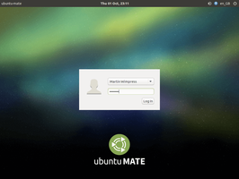
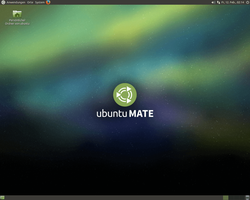
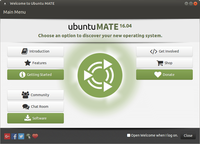

Ubuntu MATE
 Ubuntu MATE
Ubuntu MATE  ist eine offizielle Variante von Ubuntu mit der Desktop-Umgebung MATE. Geboten wird eine traditionelle und schnell zu erlernende Oberfläche mit Startmenü und Taskleiste, die auch von Einsteigern leicht zu beherrschen ist.
ist eine offizielle Variante von Ubuntu mit der Desktop-Umgebung MATE. Geboten wird eine traditionelle und schnell zu erlernende Oberfläche mit Startmenü und Taskleiste, die auch von Einsteigern leicht zu beherrschen ist.
Die Version 16.04 von Ubuntu MATE besitzt einen LTS-Status und erhält ab dem Veröffentlichungstermin drei Jahre Updates und Unterstützung durch die Entwickler.
Das offizielle Logo erklären die Entwickler mit folgender Grafik:
Geschichte¶
Erst seit Februar 2015 bzw. Ubuntu 15.04 gibt es Ubuntu MATE als offizielle Version von Ubuntu mit der Desktop-Umgebung MATE. Die derzeit jüngste Ubuntu-Variante hat aber eine deutlich längere Vergangenheit: MATE ist die Fortführung der Desktop-Umgebung GNOME 2, die wiederum lange Jahre die Standardoberfläche von Ubuntu war. Erst mit Ubuntu 11.04 erfolgte der Wechsel zu Unity.
Da die GNOME-Entwickler kein Interesse an der Pflege des beliebten GNOME 2 hatten, haben die MATE-Entwickler 2011 entschieden, das Projekt auf eigene Faust und unter neuem Namen fortzuführen. Dafür wurden sie in der Anfangszeit von manchen belächelt, aber spätestens seit 2015 ist MATE fester Bestandteil vieler Linux-Distributionen geworden.
| 16.04 - Startvorgang |
|  |
| 16.04 - Grafische Anmeldung |
|  |
| 16.04 - Desktop |
Weitere Bilder gibt es in der Ubuntu-Bildergalerie.
Hardwareanforderungen¶
Im Vergleich mit den anderen offiziellen Ubuntu-Varianten sind die Hardwareanforderungen moderat: sie liegen oberhalb von Xubuntu, aber unterhalb von Ubuntu, Kubuntu und Ubuntu GNOME. Die tatsächlichen Anforderungen an die Hardware sind abhängig von den individuellen Ansprüchen des Benutzers. Die hier beschriebenen Mindestanforderungen orientieren sich deswegen ausschließlich an der Software-Zusammenstellung, die Ubuntu MATE standardmäßig mitbringt. Es werden dabei die gängigsten Anwendungsfälle Büroarbeit und Surfen im Internet betrachtet.
Arbeitsspeicher: mindestens 512 MiB. 1 GiB RAM oder mehr werden für flüssiges Arbeiten empfohlen.
Prozessor: mindestens Pentium 4, Pentium M oder AMD K8. Ideal ist ein Mehrkern-Prozessor.
Grafikkarte: prinzipiell egal, aber es gibt auch problematische Karten (siehe Alte Hardware)
Festplattenspeicher: mindestens 4 GiB (ohne Benutzerdaten). In der Praxis ist eher das doppelte oder mehr angebracht.
Unterschiede¶
Im Vergleich mit einen "reinen" MATE sind unter Ubuntu MATE nicht nur bestimmte Programme vorinstalliert (siehe nächster Abschnitt), sondern auch ein paar Spezialitäten vorhanden.
Displaymanager¶
Ubuntu MATE nutzt wie viele andere Ubuntu-Varianten den Displaymanager LightDM zur Verwaltung der grafischen Anmeldung, während MATE eine Weiterentwicklung von GDM 2 unter der Bezeichnung MDM enthält. Der Artikel LightDM-GTK+ Einstellungseditor beschreibt, wie man den Anmeldebildschirm grafisch konfigurieren kann.
Desktop-Effekte¶
Grafische Oberflächen mit Desktop-Effekten bringen zwar keinerlei praktischen Nutzen, wenn man das Internet nutzt, ein Video schaut oder Büroarbeiten erledigt. Dennoch wird diese Funktionalität häufig mit Modernität gleichgesetzt. Ubuntu MATE bietet drei Composite-Manager zur Auswahl: zum einen den integrierten des Fenstermanagers Marco, zum anderen Compiz und Compton. Zwischen den dreien umschalten kann man über das Werkzeug MATE Tweak. Auf Wunsch können die Desktop-Effekte auch komplett abgeschaltet und Ubuntu MATE als reiner 2D-Desktop eingesetzt werden, was sich insbesondere bei älterer Hardware oder mobiler Nutzung empfiehlt.
Indicator Applets¶
Jede Desktop-Umgebung bietet ein Benachrichtigungsfeld (systray) im Panel, so auch Ubuntu MATE. Hierbei ist zu beachten, dass Ubuntu normalerweise stattdessen eine Benachrichtigungsanzeige (Indicator Applets) einsetzt, die aber nur mit dafür geeigneten Programmen funktioniert. Es kann daher sinnvoll sein, beide Möglichkeiten zu nutzen. Dazu klickt man das obere Panel mit der rechten Maustaste  an und wählt unter "Zur Leiste hinzufügen -> Benachrichtigungsanzeige" aus. Nachteilig ist, dass so manche Symbole doppelt erscheinen können.
an und wählt unter "Zur Leiste hinzufügen -> Benachrichtigungsanzeige" aus. Nachteilig ist, dass so manche Symbole doppelt erscheinen können.
Welcome¶
 Beim ersten Neustart nach der Installation wird man von einem Assistenten begrüßt, der neben einer Einführung in Ubuntu MATE Systemeinstellungen wie z.B. die Installation von Codecs oder die Auswahl einer Paketverwaltung anbietet. Leider liegt dieser sehr nützliche Assistent bisher ausschließlich in Englisch vor, so dass der Nutzen für den deutschen Sprachraum gering erscheint.
Dennoch sei allen Neueinsteigern insbesondere der Punkt "Getting Started" dringend empfohlen, da dieser fast alle der nach einer Installation erforderlichen Nacharbeiten übersichtlich zusammenfasst. Der Assistent kann auch später jederzeit wieder über den Menüpunkt "System -> Welcome" aufgerufen werden.
X2Go-Kompatibilität¶
X2Go ist ein Programm, mit dem man einen (oder mehrere) entfernte Linux-Rechner bequem im lokalen Netzwerk (LAN) oder über das Internet nutzen kann. So lassen sich beispielsweise rechenintensive Anwendungen auf entsprechend ausgerüstete Systeme verlagern und der eigene, nicht so leistungsstarke Rechner dient nur noch zur Anzeige der Ergebnisse. Ubuntu MATE gehört zu den offiziellen Ubuntu-Varianten, mit denen X2Go perfekt kombiniert werden kann.
Programme¶
Ubuntu MATE ergänzt die Desktop-Umgebung MATE mit einer Reihe vorinstallierter Anwendungen aus den offiziellen Paketquellen (siehe auch Standardanwendungen). Nachfolgend eine Übersicht zur Orientierung:
| Standardanwendungen von Ubuntu MATE 16.04 | ||
| Bereich | Anwendung | Programm |
Büro | Textverarbeitung | LibreOffice Writer |
| Dokumentenbetrachter | Atril | |
| Tabellenkalkulation | LibreOffice Calc | |
Grafik | Bildbearbeitung | Shotwell |
| Bildbetrachter | Eye of MATE | |
| Scanprogramm | Simple Scan | |
| Internet | Webbrowser | Firefox |
| Instant Messenger | Pidgin | |
| IRC-Client | HexChat | |
| Thunderbird | ||
| BitTorrent Programm | Transmission | |
| Multimedia | Audioplayer | Rhythmbox |
| Videoplayer | VLC | |
| Webcam | guvcview | |
System | Systeminformationen | MATE-Systemüberwachung |
| Netzwerkmanager | NetworkManager | |
| Paketverwaltung | Ubuntu Software, App Grid oder Synaptic | |
| Systemeinstellungen | Steuerzentrale | |
Zubehör | Archivmanager | Engrampa |
| Editor | Pluma | |
| Dateimanager | Caja | |
| Terminalemulator | MATE-Terminal, Tilda | |
| Brennprogramm | Brasero | |
| Taschenrechner | Galculator | |
| Dock | Plank | |
| Anwendungsstarter | Synapse | |
| Menübearbeiter | Mozo | |
| Dateisuche | MATE-Suchwerkzeug | |
Diese Programme können jederzeit ersetzt oder durch weitere nachinstallierte ergänzt werden.
Problembehebung¶
PAE¶
Ältere Computer (meist Notebooks), deren Prozessoren die vom Ubuntu-Kernel benötigte Physical Address Extension (PAE) zwar besitzen, aber deren Vorhandensein verschweigen, benötigen ab 14.04 die zusätzliche Bootoption forcepae, damit Ubuntu MATE startet. Dies gilt sowohl für das Live-System bzw. zur Installation als auch im installierten System.
Sollte es nach der Installation des Betriebssystems bei der Aktualisierung des Kernels zu Fehlermeldungen kommen, dann wurde diese Bootoption möglicherweise während der Installation nicht korrekt in die Konfiguration des Bootmanagers GRUB 2 übernommen und muss einmalig manuell in der Datei /etc/default/grub nachgetragen werden.
GRUB_CMDLINE_LINUX="forcepae"
Anschließend wie bei GRUB 2 üblich mit dem Befehl sudo update-grub die Konfiguration aktualisieren.
Links¶
Intern¶
MATE - Die Desktop-Umgebung von Ubuntu MATE
MATE Grundlagen - Kurzeinführung
MATE Desktop anpassen - eigene Vorlieben umsetzen
MATE Menü - den integrierten Menü-Editor nutzen
MATE Tastenkürzel - eigene Tastenkombinationen definieren
Extern¶
Ubuntu-mate.org
- Offizielle ProjektseiteDer Bodenständige - der Mate-Desktop im Test
 - Blogbeitrag, 02/2015
- Blogbeitrag, 02/2015
- Erstellt mit Inyoka
-
 2004 – 2017 ubuntuusers.de • Einige Rechte vorbehalten
2004 – 2017 ubuntuusers.de • Einige Rechte vorbehalten
Lizenz • Kontakt • Datenschutz • Impressum • Serverstatus -
Serverhousing gespendet von